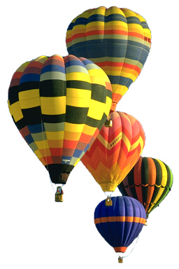

| 1 | 2 | |
| 3 | 4 | |
| 1 | |
| 2 | 3 |
| 4 | |
| 1 | |
| 2 | 3 |
| 4 | |
| 1 | 3 |
| 2 | |
| 4 | |
| 22.09.2025 - 28.09.2025 | |||||
| 22.09.2025 Понедельник |
23.09.2025 Вторник |
24.09.2025 Среда |
25.09.2025 Четверг |
26.09.2025 Пятница |
|
| 1 пара | ДискрМатем 203 ГУК Короткова Т.В. |
ОснФинГрамотности 312 ГУК Коржова Е. В. |
ИнЯзВПрофДеят 206 ГУК Никонова Г.А. |
||
| 2 пара | АрхитАппарСредств 203 ГУК Ходачков Д.С. |
АрхитАппарСредств 210 ГУК Ходачков Д.С. |
ИнфТехнологии ДОТ Ищенко О.С. |
Электротех 203 ГУК Плетнев В.П. |
|
| 3 пара | ФизикПередДанных 210 ГУК Сторожаков С.Ю. |
ОсновПроектБазДанных ДОТ Кузнецова Е.А. |
АлгоритмПрограмм 205 ГУК Савченко Н.Н. |
||
| 4 пара | Физ-ра ДОТ Грачев С.В. |
ОсновПроектБазДанных 206 ГУК Кузнецова Е.А. |
История России 203 ГУК Степанова Ю.В. |
||
| 5 пара | ОперацСистемы ДОТ Бочарова О.Р. |
ЭлемВысшМатемат 203 ГУК Короткова Т.В. |
|||
| 6 пара | ДискрМатем ДОТ Короткова Т.В. |
||||
| 7 пара | |||||
| 8 пара | |||||
| I спряжение | II спряжение | |||
| Лицо | ед.ч. | мн.ч. | ед.ч. | мн.ч. |
| I | У(Ю) | ЕМ | У(Ю) | ИМ |
| II | ЕШЬ | ЕТЕ | ИШЬ | ИТЕ |
| III | ЕТ | УТ(ЮТ) | ИТ | АТ(ЯТ) |
| Неопр. форма |
АТЬ, ЯТЬ, ЕТЬ, ЫТЬ, ОТЬ, УТЬ, ТЬ |
ИТЬ | ||
| Искл. | брить, стелить |
гнать, держать, дышать и слышать, зависеть, видеть, ненавидеть, а еще смотреть, вертеть, и обидеть, и терпеть |
||
Полеты на воздушном шаре
|
Воздушный шар, наполненный горячим воздухом, летает, потому, что горячий воздух легче холодного. Первые воздушные шары построены в 1783 г. во Франции братья Монгольфье. |
 |
Первыми пассажирами воздушного шара стали овца, утка и петух. Их полет продолжался всего 8 минут. Первый полет человека на воздушном шаре длился 25 минут, а пролетел шар 8 км. |
Позднее шары стали наполнять не горячим воздухом, а газами легче воздуха, например, водородом.